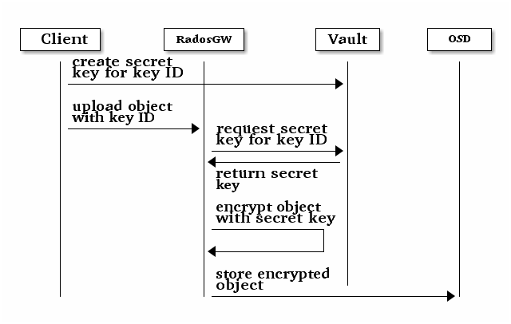

HashiCorp Vault Integration¶
HashiCorp Vault can be used as a secure key management service for Server-Side Encryption (SSE-KMS).

Some examples below use the Vault command line utility to interact with Vault. You may need to set the following environment variable with the correct address of your Vault server to use this utility:
export VAULT_ADDR='http://vault-server:8200'
Vault secrets engines¶
Vault provides several secrets engines, which can store, generate, and encrypt data. Currently, the Object Gateway supports:
KV secrets engine version 2
KV secrets engine¶
The KV secrets engine is used to store arbitrary key/value secrets in Vault. To enable the KV engine version 2 in Vault, use the following command:
vault secrets enable -path secret kv-v2
The Object Gateway can be configured to use the KV engine version 2 with the following setting:
rgw crypt vault secret engine = kv
Transit secrets engine¶
The transit engine handles cryptographic functions on data in-transit. To enable it in Vault, use the following command:
vault secrets enable transit
The Object Gateway can be configured to use the transit engine with the following setting:
rgw crypt vault secret engine = transit
Vault authentication¶
Vault supports several authentication mechanisms. Currently, the Object Gateway can be configured to authenticate to Vault using the Token authentication method or a Vault agent.
Token authentication¶
Note
Token authentication is not recommended for production environments.
The token authentication method expects a Vault token to be present in a plaintext file. The Object Gateway can be configured to use token authentication with the following settings:
rgw crypt vault auth = token
rgw crypt vault token file = /etc/ceph/vault.token
rgw crypt vault addr = http://vault-server:8200
For security reasons, the token file must be readable by the Object Gateway only. Also, the Object Gateway should be given a Vault token with a restricted policy that allows it to fetch keyrings from a specific path only. Such a policy can be created in Vault using the command line utility as in the following examples:
vault policy write rgw-kv-policy -<<EOF
path "secret/data/*" {
capabilities = ["read"]
}
EOF
vault policy write rgw-transit-policy -<<EOF
path "transit/export/encryption-key/*" {
capabilities = ["read"]
}
EOF
Once the policy is created, a token can be generated by a Vault administrator:
vault token create -policy=rgw-kv-policy
Sample output:
Key Value
--- -----
token s.72KuPujbc065OdWB71poOmIq
token_accessor jv95ZYBUFv6Ss84x7SCSy6lZ
token_duration 768h
token_renewable true
token_policies ["default" "rgw-kv-policy"]
identity_policies []
policies ["default" "rgw-kv-policy"]
The actual token, displayed in the Value column of the first line of the
output, must be saved in a file as plaintext.
Vault agent¶
The Vault agent is a client daemon that provides authentication to Vault and manages token renewal and caching. It typically runs on the same host as the Object Gateway. With a Vault agent, it is possible to use other Vault authentication mechanism such as AppRole, AWS, Certs, JWT, and Azure.
The Object Gateway can be configured to use a Vault agent with the following settings:
rgw crypt vault auth = agent
rgw crypt vault addr = http://localhost:8100
Vault namespaces¶
In the Enterprise version, Vault supports the concept of namespaces, which allows centralized management for teams within an organization while ensuring that those teams operate within isolated environments known as tenants.
The Object Gateway can be configured to access Vault within a particular namespace using the following configuration setting:
rgw crypt vault namespace = tenant1
Create a key in Vault¶
Note
Keys for server-side encryption must be 256-bit long and base-64 encoded.
Using the KV engine¶
A key for server-side encryption can be created in the KV version 2 engine using the command line utility, as in the following example:
vault kv put secret/myproject/mybucketkey key=$(openssl rand -base64 32)
Sample output:
====== Metadata ======
Key Value
--- -----
created_time 2019-08-29T17:01:09.095824999Z
deletion_time n/a
destroyed false
version 1
Note that in the KV secrets engine, secrets are stored as key-value pairs, and
the Gateway expects the key name to be key, i.e. the secret must be in the
form key=<secret key>.
Using the Transit engine¶
Keys created with the Transit engine must be exportable in order to be used for server-side encryption with the Object Gateway. An exportable key can be created with the command line utility as follows:
vault write -f transit/keys/mybucketkey exportable=true
The command above creates a keyring, which contains a key of type
aes256-gcm96 by default. To verify that the key was correctly created, use
the following command:
vault read transit/export/encryption-key/mybucketkey/1
Sample output:
Key Value
--- -----
keys map[1:-gbTI9lNpqv/V/2lDcmH2Nq1xKn6FPDWarCmFM2aNsQ=]
name mybucketkey
type aes256-gcm96
Note that in order to read the key created with the Transit engine, the full path must be provided including the key version.
Configure the Ceph Object Gateway¶
Edit the Ceph configuration file to enable Vault as a KMS backend for server-side encryption:
rgw crypt s3 kms backend = vault
Choose the Vault authentication method, e.g.:
rgw crypt vault auth = token
rgw crypt vault token file = /etc/ceph/vault.token
rgw crypt vault addr = http://vault-server:8200
Or:
rgw crypt vault auth = agent
rgw crypt vault addr = http://localhost:8100
Choose the secrets engine:
rgw crypt vault secret engine = kv
Or:
rgw crypt vault secret engine = transit
Optionally, set the Vault namespace where encryption keys will be fetched from:
rgw crypt vault namespace = tenant1
Finally, the URLs where the Gateway will retrieve encryption keys from Vault can be restricted by setting a path prefix. For instance, the Gateway can be restricted to fetch KV keys as follows:
rgw crypt vault prefix = /v1/secret/data
Or, in the case of exportable transit keys:
rgw crypt vault prefix = /v1/transit/export/encryption-key
In the example above, the Gateway would only fetch transit encryption keys under
http://vault-server:8200/v1/transit/export/encryption-key.
Upload object¶
When uploading an object to the Gateway, provide the SSE key ID in the request. As an example, for the kv engine, using the AWS command-line client:
aws --endpoint=http://radosgw:8000 s3 cp plaintext.txt s3://mybucket/encrypted.txt --sse=aws:kms --sse-kms-key-id myproject/mybucketkey
As an example, for the transit engine, using the AWS command-line client:
aws --endpoint=http://radosgw:8000 s3 cp plaintext.txt s3://mybucket/encrypted.txt --sse=aws:kms --sse-kms-key-id mybucketkey/1
The Object Gateway will fetch the key from Vault, encrypt the object and store it in the bucket. Any request to download the object will make the Gateway automatically retrieve the correspondent key from Vault and decrypt the object.
Note that the secret will be fetched from Vault using a URL constructed by
concatenating the base address (rgw crypt vault addr), the (optional)
URL prefix (rgw crypt vault prefix), and finally the key ID.
In the kv engine example above, the Gateway would fetch the secret from:
http://vaultserver:8200/v1/secret/data/myproject/mybucketkey
In the transit engine example above, the Gateway would fetch the secret from:
http://vaultserver:8200/v1/transit/export/encryption-key/mybucketkey/1